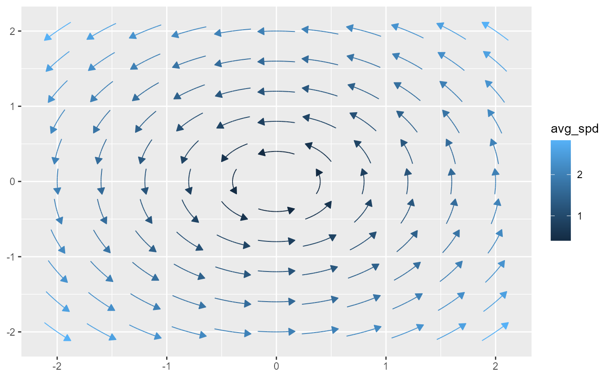
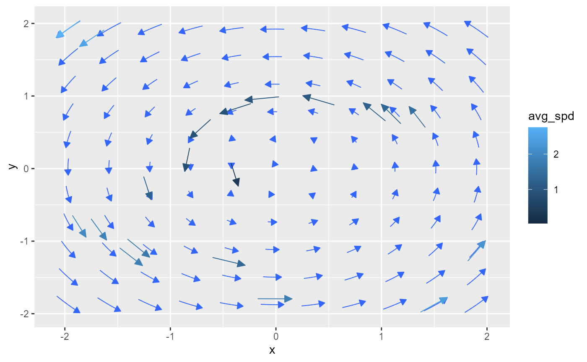
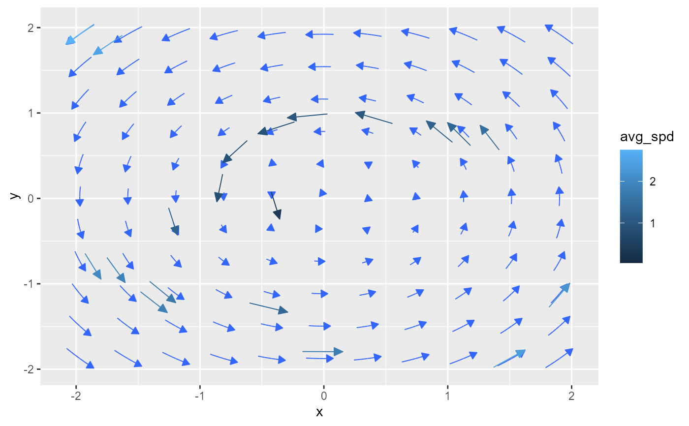

geom_stream_smooth() creates a ggplot2 layer that visualizes a smooth
vector field based on raw vector data. The function fits a multivariate
linear model (by default, using the formula cbind(fx, fy) ~ x * y) to
predict the vector displacements at any given location. It also handles
different input formats by converting polar coordinates or endpoint data to
vector displacements.
Usage
geom_stream_smooth(
mapping = NULL,
data = NULL,
stat = StatStreamField,
position = "identity",
...,
na.rm = FALSE,
show.legend = NA,
inherit.aes = TRUE,
n = 11,
xlim = NULL,
ylim = NULL,
normalize = TRUE,
center = FALSE,
type = "vector",
formula = cbind(fx, fy) ~ x * y,
eval_points = NULL,
lineend = "butt",
linejoin = "round",
linemitre = 10,
arrow = grid::arrow(angle = 20, length = unit(0.015, "npc"), type = "closed")
)
stat_stream_smooth(
mapping = NULL,
data = NULL,
geom = GeomStream,
position = "identity",
...,
na.rm = FALSE,
show.legend = NA,
inherit.aes = TRUE,
n = 11,
xlim = NULL,
ylim = NULL,
normalize = TRUE,
center = FALSE,
type = "vector",
formula = cbind(fx, fy) ~ x * y,
eval_points = NULL,
lineend = "butt",
linejoin = "round",
linemitre = 10,
arrow = grid::arrow(angle = 20, length = unit(0.015, "npc"), type = "closed")
)Arguments
- mapping
A set of aesthetic mappings created by
ggplot2::aes(). Required: Must includexandy; vector displacements are defined byfxandfy.- data
A data frame containing the raw vector data.
- stat
The statistical transformation to use on the data. Defaults to
"vector_smooth".- position
Position adjustment, either as a string or the result of a position adjustment function.
- ...
Additional arguments passed to the layer. If a fixed parameter
coloris not provided, thencolor = "blue"is used.- na.rm
Logical. If
FALSE(the default), missing values are removed with a warning.- show.legend
Logical. Should this layer be included in the legends?
- inherit.aes
Logical. If
FALSE, overrides the default aesthetics rather than combining with them.- n
An integer vector specifying the grid resolution for smoothing.
- xlim
Numeric vector of length 2 specifying the domain limits in the \(x\)-direction. Defaults to \(c(-1, 1)\).
- ylim
Numeric vector of length 2 specifying the domain limits in the \(y\)-direction. Defaults to \(c(-1, 1)\).
- normalize
Logical. If
TRUE, the vector endpoints are scaled to unit length before being scaled byL(default:TRUE).- center
Logical. If
TRUE, the vector is recentered so that the original(x, y)becomes the midpoint (default isTRUEforgeom_vector()andFALSEforgeom_vector2()).- type
Character. Either
"stream"(default) or"vector"."stream"computes a full streamline by integrating in both directions (ifcenter = TRUE), while"vector"computes a single vector.- formula
A formula specifying the multivariate linear model used for smoothing. Defaults to
cbind(fx, fy) ~ x * y.- eval_points
A data frame of evaluation points, or
NULL. When provided, it specifies the grid where the smoothing model is evaluated; ifNULL, a grid is generated based onn.- lineend
Line end style (round, butt, square).
- linejoin
Line join style (round, mitre, bevel).
- linemitre
Line mitre limit (number greater than 1).
- arrow
An optional
grid::arrow()specification to add arrowheads to the vectors (default:grid::arrow(angle = 25, length = unit(0.025, "npc"), type = "closed")).- geom
The geometric object used to render the streamline (only used in
stat_stream(); defaults to GeomStream).
Value
A ggplot2 layer that can be added to a ggplot object to display a smoothed vector field.
- norm
Computed as the Euclidean norm of the displacement, \(\sqrt{fx^2 + fy^2}\), this variable is used to normalize and scale the vector lengths.
- t
The integration time or evaluation time at each computed point along the smoothed field (when applicable).
- d
The incremental distance between consecutive computed points.
- l
The cumulative arc length along the smoothed vector field, calculated as the cumulative sum of
d.
Aesthetics
geom_stream_smooth() supports the following aesthetics
(required aesthetics are in bold):
x: The x-coordinate of the vector's starting point.y: The y-coordinate of the vector's starting point.fx: The displacement along the x-axis.fy: The displacement along the y-axis.color: The fixed color for the vector. Defaults to"blue".linewidth: The thickness of the vector line.linetype: The type of the vector line (e.g., solid or dashed).alpha: The transparency level of the vector.arrow: Specifies arrowheads for the vectors.
Details
Data Conversion:
If xend/yend are missing or all NA, the function computes them. It
first checks for vector displacements (fx and fy); if present, it
computes \(xend = x + fx,\quad yend = y + fy.\) Otherwise, it checks for
polar coordinates (angle and distance) and computes \(xend = x +
distance \times \cos(angle \times 180/\pi),\quad yend = y + distance \times
\sin(angle \times 180/\pi).\) An error is thrown if neither set is
available.
Smoothing:
The multivariate linear model is fitted using the provided formula and
data. This model is then used to predict vector displacements at any
specified grid point, generating a smooth approximation of the vector
field.
Prediction Intervals: Two types of prediction intervals can be displayed:
Ellipse: Depicts the joint uncertainty (covariance) in the predicted
fxandfy.Wedge: Indicates the range of possible vector directions and magnitudes.
Examples
# Define a true vector field function
f <- function(u) {
x <- u[1]; y <- u[2]
c(x^2 - y^2, x^2 + y^2 - 2)
}
# Alternative example function
f <- function(u) c(-u[2], u[1])
# Visualize the vector field
ggplot() + geom_stream_field(fun = f, xlim = c(-2, 2), ylim = c(-2, 2))

# Generate design points
n <- 20
df <- data.frame(x = runif(n, -2, 2), y = runif(n, -2, 2))
# Sample function values at design points
fdf <- as.data.frame(t(apply(df, 1, f)))
colnames(fdf) <- c("fx", "fy")
df <- cbind(df, fdf)
# Visualize raw vector field data
ggplot(df) + geom_vector(aes(x, y, fx = fx, fy = fy))
# Add smoothed layer using default model
ggplot(df) +
geom_vector(aes(x, y, fx = fx, fy = fy)) +
geom_stream_smooth(formula = cbind(fx, fy) ~ x * y)
# Use a more complex polynomial model
ggplot(df) +
geom_vector(aes(x, y, fx = fx, fy = fy)) +
geom_stream_smooth(formula = cbind(fx, fy) ~ poly(x, 2) * poly(y, 2), data = df)
 # Fit a linear model and use it for prediction
fhat <- function(u) {
model <- lm(cbind(fx, fy) ~ x * y, data = df)
predict(model, newdata = data.frame(x = u[1], y = u[2])) |> as.numeric()
}
# Visualize estimated field with the raw vector field
ggplot(df) +
geom_stream_field(fun = fhat, normalize = FALSE, color = "#3366FF") +
geom_vector(aes(x, y, fx = fx, fy = fy))

# Generate a hexagonal grid
hex_lattice <- grid_hex(xlim = c(-5, 5), ylim = c(-5, 5), d = 1)
# Use the hexagonal grid in geom_stream_field
ggplot(data = df) +
geom_vector(aes(x, y, fx = fx, fy = fy), color = "black", normalize = FALSE) +
geom_stream_smooth(eval_points = hex_lattice)
# user specified point
eval_pts <- data.frame(x = c(0, 1), y = c(2, -1))
ggplot(data = df) +
geom_vector(aes(x, y, fx = fx, fy = fy), color = "black", normalize = FALSE) +
geom_stream_smooth(eval_points = eval_pts)
# Fit a linear model and use it for prediction
fhat <- function(u) {
model <- lm(cbind(fx, fy) ~ x * y, data = df)
predict(model, newdata = data.frame(x = u[1], y = u[2])) |> as.numeric()
}
# Visualize estimated field with the raw vector field
ggplot(df) +
geom_stream_field(fun = fhat, normalize = FALSE, color = "#3366FF") +
geom_vector(aes(x, y, fx = fx, fy = fy))

# Generate a hexagonal grid
hex_lattice <- grid_hex(xlim = c(-5, 5), ylim = c(-5, 5), d = 1)
# Use the hexagonal grid in geom_stream_field
ggplot(data = df) +
geom_vector(aes(x, y, fx = fx, fy = fy), color = "black", normalize = FALSE) +
geom_stream_smooth(eval_points = hex_lattice)
# user specified point
eval_pts <- data.frame(x = c(0, 1), y = c(2, -1))
ggplot(data = df) +
geom_vector(aes(x, y, fx = fx, fy = fy), color = "black", normalize = FALSE) +
geom_stream_smooth(eval_points = eval_pts)